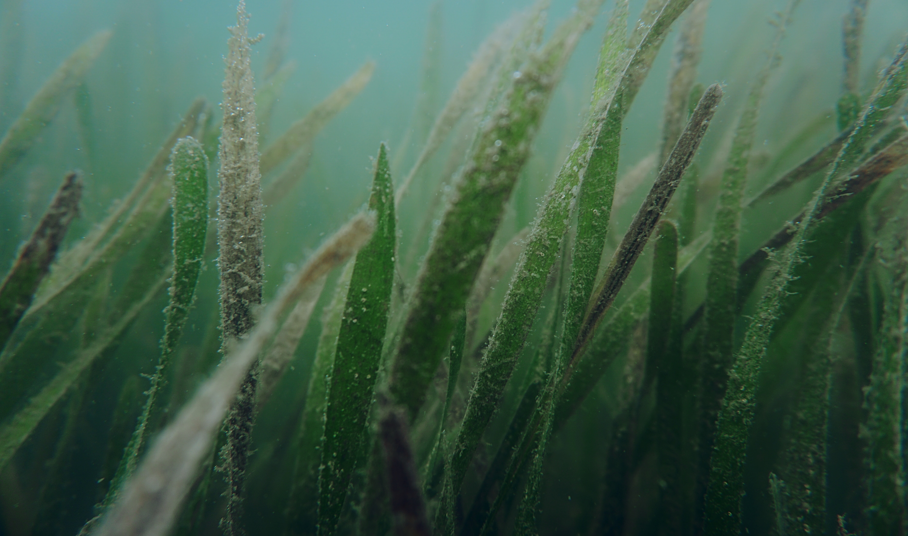
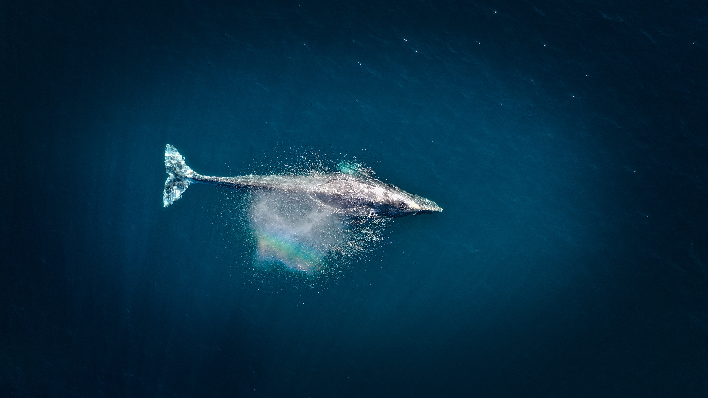

For the past decade, I have studied how climate change is affecting various coastal ecosystems and organisms. My research is made possible through partnerships with myriad collaborators, including oyster companies, regulatory agencies, community members, and scientists spanning multiple disciplines. I firmaly believe that science is at its best and its impact is greatest when operating as a coalition.
Preparing Oysters For Disease Outbreaks in a Warmer Ocean

For my PhD research in Dr. Ted Grosholz's lab at UC Davis, I am studying how warming and the temperature-associated disease, Ostreid herpesvirus (OsHV-1) affect the farmed Pacific oyster Crassostrea gigas. I'm also interested in seeing if priming oysters to warmer temperatures influences C. gigas' response to OsHV-1.
Understanding How Coastal Ecosystems Respond to Ocean Acidification
Prior to my PhD, I studied how ocean acidification impacts the early life stages of the giant kelp and rhodolith physiology as well as how seagrass modulates pH levels. I also assessed whether mussel recruitment rates followed changes in oceanographic conditions, such as temperature and pH. I also monitored shifts in carbonate chemistry near an oyster farm. .
Exploring Whale Mortality in the California Current
During my PhD, I co-led a group of graduate students to synthesize available data on different causes of whale mortality within the California current to inform whale conservation policy. .
Publications
Oldach, E.*, Killeen, H.*, Shukla, P., Brauer, E., Carter, N., Fields, J., Thomsen, A., Cooper, C., Mellinger, L., Wang, K., Hendrickson, C., Neuman, A., Bøving, P.S., Fangue, N. 2022. Managed and unmanaged whale mortality in the California Current Ecosystem. Marine Policy. doi.org/10.1016/j.marpol.2022.105039. *denotes shared first-authorship.
Merkle, B.G., Valdez-Ward, E., Shukla, P., Bayer, S.R. 2021. Sharing science through shared values, goals, and stories: an evidence-based approach to making science matter. Human-Wildlife Interactions. doi.org/10.26077/9wss-av78. Featured in SciCommBites.
Ricart, A., Gaylord, B., Hill, T., Sigwart, J., Shukla, P., Ward, M., Sanford, E. 2021. Seagrass-driven changes in carbonate chemistry enhance oyster shell growth. Oecologia. doi.org/10.1007/s00442-021-04949-0.
Ricart, A., Ward, M., Hill, T., Sanford, E., Kroeker, K., Takeshita, Y., Merolla, S., Shukla, P., Ninokawa, A., Elsmore, K., Gaylord, B. 2021. Coast-wide evidence of low pH amelioration by seagrass ecosystems. Global Change Biology. doi.org/10.1111/gcb.15594.
Barclay, K.M., Gaylord, B., Jellison, B.M., Shukla, P., Sanford, E., Leighton, L. R. 2019. Variation in the effects of ocean acidification on shell growth and strength in two intertidal gastropods. Marine Ecology Progress Series. doi.org/10.3354/meps13056.
Cavalcanti, G.S., Shukla, P., Morris, M., Ribeiro, B., Foley, M., Doane, M. P., Thompson, C. C., Edwards, M.S., Dinsdale, E. A., Thompson, F. L. 2018. Rhodoliths holobionts in a changing ocean: host-microbes interactions mediate coralline algae resilience under ocean acidification. BMC Genomics. doi.org/10.1186/s12864-018-5064-4.
Shukla, P. Edwards, M.S. 2017. Elevated pCO2 is less detrimental than increased temperature to early development of the giant kelp, Macrocystis pyrifera (Phaeophyceae, Laminariales). Phycologia. doi.org/10.2216/16-120.1.
Chapters & Reports
Science in Action: Exploring the Future of U.S. Aquaculture, A COMPASS Roundtable on Ocean Aquaculture.2020.
Oldach, E. J., Shukla, P.. 2020. Vulnerability Assessments for Evaluating the Sensitivity of Infrastructure to Environmental Change. Encyclopedia of the UN Sustainable Development Goals: Industry, Innovation and Infrastructure. doi.org/10.1186/s12864-018-5064-4.
Gaylord, B., Rivest, E., Hill, T., Sanford, E., Shukla, P., Ninokawa, A., Ng, G. 2018. California Mussels as Bio-Indicators fo Ocean Acidification.. California's Fourth Climate Change Assessment. Report.